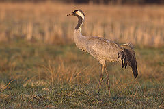
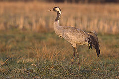

| Common Crane | |
|---|---|
|  | |
| Conservation status | |
| Binomial name | |
| Grus grus (Linnaeus, 1758) |
|
| Synonyms | |
|
Grus turfa Portis, 1884 |
| Common Crane | |
|---|---|
|  | |
| Conservation status | |
| Binomial name | |
| Grus grus (Linnaeus, 1758) |
|
| Synonyms | |
|
Grus turfa Portis, 1884 |
The Common Crane (Grus grus), also known as the Eurasian Crane, is a bird of the family Gruidae, the cranes.
It is a large, stately bird and a medium-sized crane at 100–130 cm (40–52 in) long, with a 180–240 cm (71–96 in) wingspan and a weight of 4.5–6 kg (10–13.2 lbs). It is grey with a white facial streak and a bunch of black wing plumes. Adults have a red crown patch. It has a loud trumpeting call, given in flight and display. It has a dancing display, leaping with wings uplifted.
It breeds in wetlands in northern parts of Europe and Asia. The global population is in the region of 210,000-250,000, with the vast majority nesting in Russia and Scandinavia. In Great Britain the Common Crane became extirpated in the 17th century, but a tiny population now breeds again in the Norfolk Broads[citation needed] and is slowly increasing and a reintroduction is planned for the Somerset levels.
It is a long distance migrant wintering in Africa (south to Morocco and Ethiopia), southern Europe, and southern Asia (south to northern Pakistan and eastern China). Migrating flocks fly in a V formation.
It is a rare visitor to western North America, where birds are occasionally seen with flocks of migrating Sandhill Cranes.
It is omnivorous, eating leaves, roots, berries (including notably the cranberry, which is probably named after the species), insects, small birds and mammals.
The Common Crane is one of the species to which the Agreement on the Conservation of African-Eurasian Migratory Waterbirds (AEWA) applies.

.jpg){kind=link}